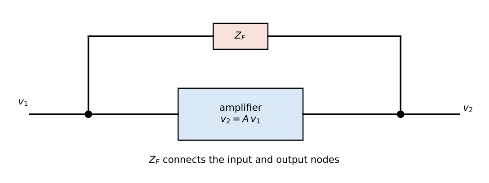
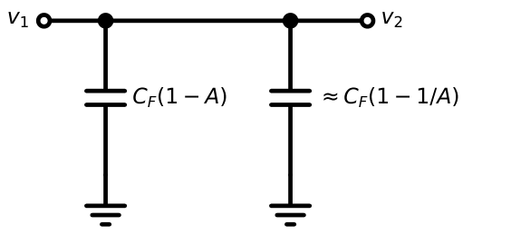
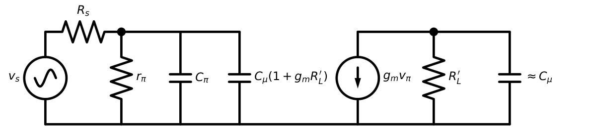
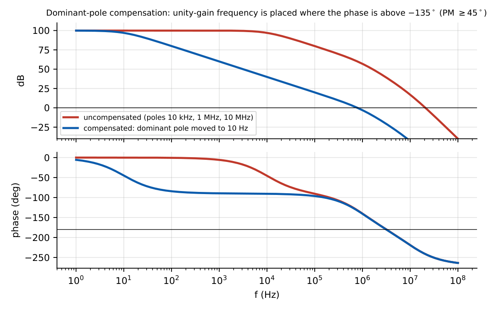
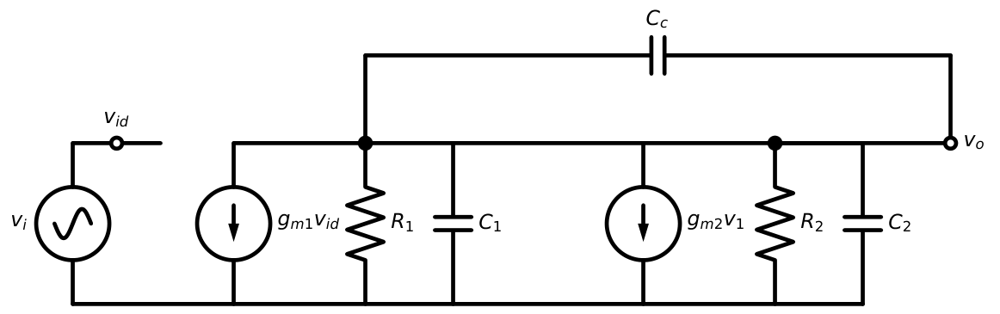
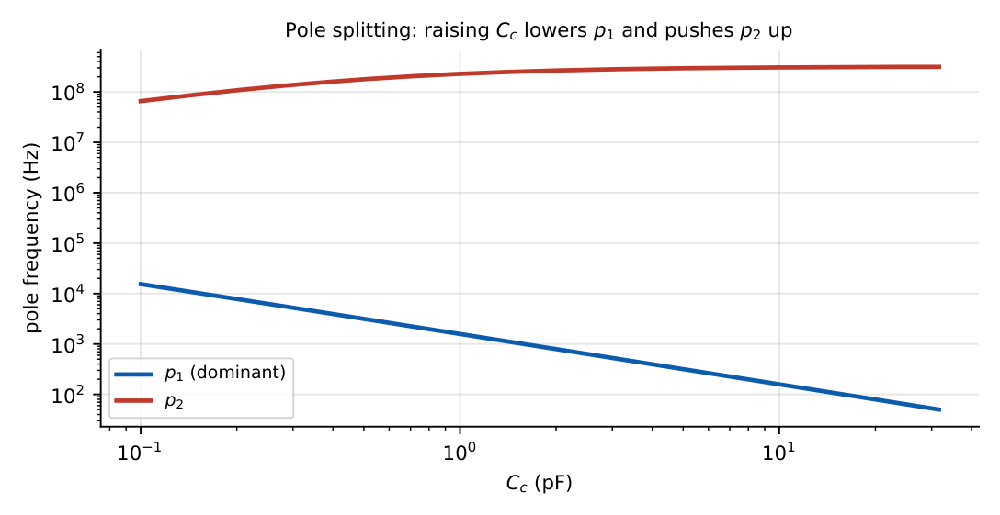
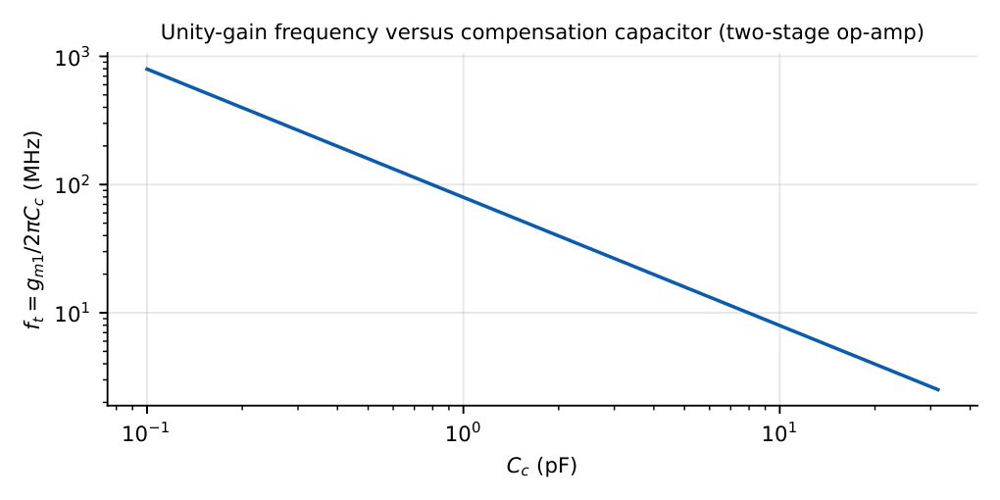

Miller Effect and Compensation
In this chapter
27.1 Miller theorem

The current into \(Z_F\) from node 1 is \(i=(v_1-v_2)/Z_F=v_1(1-A)/Z_F\). The same current is drawn by an impedance \(Z_1\) to ground: \(Z_1=v_1/i=\dfrac{Z_F}{1-A}\). At the output: \(i_2=(v_2-v_1)/Z_F=v_2(1-1/A)/Z_F\), so \(Z_2=\dfrac{Z_F}{1-1/A}\).

The theorem is valid when \(A\) is known (usually evaluated at midband) and lets a bridging element be analysed as two grounded ones.
27.2 Miller capacitance
For a bridging capacitor: \(Z_F=1/(sC_F)\Rightarrow Z_1=\dfrac{1}{sC_F(1-A)}\), i.e. a capacitance \(C_{M1}=C_F(1-A)\) at the input and \(C_{M2}=C_F(1-1/A)\approx C_F\) at the output.
27.3 Miller multiplication
For an inverting amplifier (\(A=-|A|\)) the input capacitance is multiplied by \(1+|A|\): \[C_{M1}=C_F\,(1+|A|).\] For a non-inverting stage with \(A<1\) (source follower, \(A\approx0.9\)) it shrinks (\(1-A=0.1\)): bootstrapping.

27.4 Common-source amplifier
\(C_{in}=C_{gs}+C_{gd}(1+g_mR_L')\), \(f_H\approx\dfrac{1}{2\pi R_{sig}C_{in}}\)
\(C_{gs}=5\) pF, \(C_{gd}=1\) pF, \(g_mR_L'=10\): \(C_{in}=5+11=16\) pF. With \(R_{sig}=10\) k\(\Omega\): \(f_H=1/(2\pi\times10\,\mathrm k\times16\,\mathrm{pF})=1.0\) MHz. If the gain doubles to \(20\): \(C_{in}=26\) pF and \(f_H=0.61\) MHz.
27.5 Common-emitter amplifier
\(C_{in}=C_\pi+C_\mu(1+g_mR_L')\), \(f_H\approx\dfrac{1}{2\pi(R_s\|r_\pi)C_{in}}\)
\(C_\pi=30\) pF, \(C_\mu=2\) pF, \(g_mR_L'=100\): \(C_{in}=30+202=232\) pF. \((R_s\|r_\pi)=1\) k\(\Omega\): \(f_H=686\) kHz. The Miller term is \(87\%\) of the total.
The cascode (Chapter 9) cuts the Miller gain to about \(-1\) and restores wide bandwidth.
27.6 Dominant-pole compensation
An op-amp built from several gain stages has poles at frequencies \(f_{p1}<f_{p2}<f_{p3}\ldots\). For a unity-gain feedback amplifier to be stable (\(\mathrm{PM}\ge45^\circ\)) the loop gain must fall to 0 dB before the second pole. Compensation adds a capacitor to make the first pole much lower:
Choose \(f_D=\dfrac{f_{p2}}{A_0}\) (so that \(|A|=1\) at \(f_{p2}\)): \(f_t=A_0f_D=f_{p2}\), giving \(\mathrm{PM}\approx45^\circ\) (with \(f_{p3}\gg f_{p2}\)).
For \(\mathrm{PM}=60^\circ\): \(f_t\approx f_{p2}/1.7\).

\(A_0=10^5\), second pole at \(1\) MHz: \(f_D=1\,\mathrm{MHz}/10^5=10\) Hz; \(f_t=1\) MHz. This is exactly the 741’s design.
The price is bandwidth: the op-amp gain is \(10^5\) only below \(10\) Hz.
27.7 Pole splitting
A compensation capacitor \(C_c\) across the second stage (from output to the first-stage output) uses the Miller effect to lower the first pole dramatically and push the second pole up.

\(A_0=(g_{m1}R_1)(g_{m2}R_2)\)
\(p_1\approx-\dfrac{1}{R_1(1+g_{m2}R_2)C_c}\approx-\dfrac{1}{g_{m2}R_1R_2C_c}\)
\(p_2\approx-\dfrac{g_{m2}C_c}{C_1C_2+C_c(C_1+C_2)}\approx-\dfrac{g_{m2}}{C_1+C_2}\) (large \(C_c\))
Unity-gain frequency \(\omega_t=A_0|p_1|=\dfrac{g_{m1}}{C_c}\)
RHP zero: \(z=+\dfrac{g_{m2}}{C_c}\), removed by a nulling resistor \(R_z=1/g_{m2}\).

\(g_{m1}=0.5\) mS, \(R_1=200\) k, \(g_{m2}=5\) mS, \(R_2=100\) k, \(C_1=0.5\) pF, \(C_2=2\) pF. \(A_0=100\times500=5\times10^4\) (94 dB).
Without \(C_c\): poles \(1/R_1C_1=10^7\) rad/s and \(1/R_2C_2=5\times10^6\) rad/s: unity-gain crossing at \(\approx1.6\times10^9\) rad/s where phase \(\approx-179.5^\circ\): PM \(\approx0.5^\circ\) (unstable).
With \(C_c=2\) pF: \(p_1\approx5\times10^3\) rad/s (796 Hz); \(\omega_t=g_{m1}/C_c=2.5\times10^8\) rad/s (39.8 MHz); \(p_2\approx1.67\times10^9\) rad/s; RHP zero \(2.5\times10^9\) rad/s. PM \(\approx90^\circ-\tan^{-1}(0.15)-\tan^{-1}(0.1)=90-8.5-5.7\approx76^\circ\).
27.8 Unity-gain frequency
\(f_t=g_{m1}/(2\pi C_c)\): a larger \(C_c\) lowers the bandwidth but improves the phase margin, and also lowers the slew rate (\(SR=I_{tail}/C_c\)).

27.9 Gain-bandwidth trade-off
Compensation trades bandwidth for stability; at a given \(C_c\), lowering the closed-loop gain (higher \(\beta\)) reduces phase margin (Chapter 28). For unity-gain stability the worst case is \(\beta=1\): compensate for this and all other gains are also stable.
27.10 Compensation in multistage amplifiers
- Miller compensation (above): two-stage op-amps.
- Nested Miller: three-stage amplifiers, with an inner and outer \(C_c\).
- Nulling resistor: \(R_z\) in series with \(C_c\): \(z=\dfrac{1}{C_c(1/g_{m2}-R_z)}\); \(R_z=1/g_{m2}\) moves the zero to \(\infty\); \(R_z>1/g_{m2}\) makes it a LHP zero that can cancel \(p_2\) (lead compensation).
- Feed-forward and load compensation in cascode/folded-cascode op-amps.
27.11 GATE problems
Q1. A CE stage with \(C_\mu=1\) pF and \(|A_v|=80\) has a Miller input capacitance contribution of pF.
Q2. A source follower with \(A_v=0.9\) has a \(C_{gs}=10\) pF; the Miller-reduced input capacitance from \(C_{gs}\) is pF.
Q3. An op-amp has \(A_0=10^5\) and its second pole at \(2\) MHz. The dominant pole for \(\mathrm{PM}\approx45^\circ\) is at Hz.
Q4. In a Miller-compensated two-stage amplifier, increasing \(C_c\) (A) raises \(p_1\) (B) lowers \(p_1\) and raises \(p_2\) (C) lowers both (D) raises both.
Q5. \(g_{m1}=1\) mS, \(C_c=1\) pF: \(f_t=\) MHz.
Q6. Miller’s theorem places at the input an impedance \(Z_F/(1-A)\). For \(A=-20\) and \(C_F=2\) pF the input capacitance is pF.
Answers: Q1: \(1\times81=81\) pF. Q2: \(10\times(1-0.9)=1\) pF. Q3: \(2\,\mathrm{MHz}/10^5=20\) Hz. Q4: (B). Q5: \(10^{-3}/(2\pi\times10^{-12})=159\) MHz. Q6: \(2\times21=42\) pF.
- Find \(R_z\) that cancels the RHP zero for \(g_{m2}=4\) mS. [250 \(\Omega\)]
- Slew rate for \(I_{tail}=20\ \mu\)A, \(C_c=2\) pF. [10 V/\(\mu\)s]
- Why is the Miller effect absent in the common-base stage? [The base is at AC ground; no bridging capacitor from input to a high-gain node]